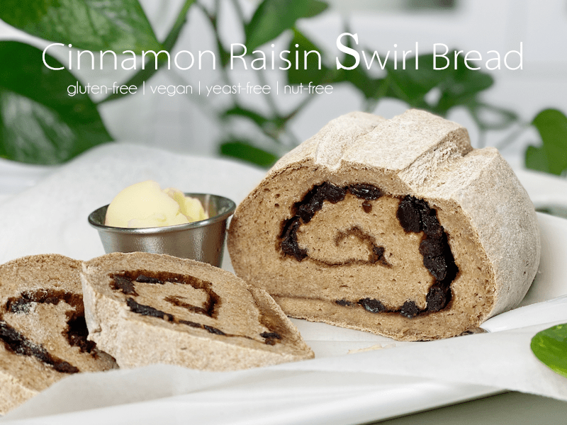
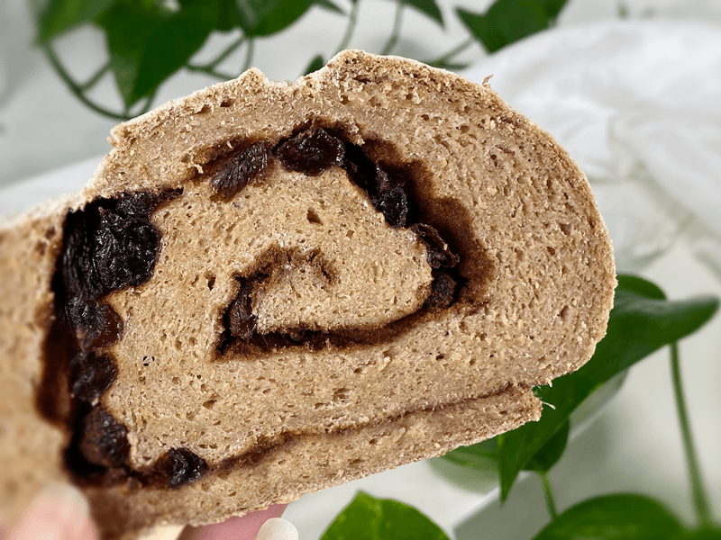

Cinnamon Raisin Swirl Bread | Baked | Gluten-Free | Vegan | Yeast-Free | Nut-Free
Cinnamon Raisin Swirl Bread is sweet and soft, with swirls of cinnamon, sugar, and plump raisins making it perfect for savoring each bite. You can enjoy this bread with a spread of almond or peanut butter, but to be honest (which I always am), it tastes amazing on its own, which lets you focus on the texture of the bread and the sweet chewiness of the raisins. If you are new to baking bread, I want to assure you this recipe is simple, but most of all, delicious and nutritious!

I can never leave a recipe as-is. It’s in my blood to tinker and find fun ways to spruce things up. Today was no different. I used my Everyday Sandwich Bread recipe and doctored it up with a few additional ingredients, creating this delicious Cinnamon Raisin Swirl Bread. Forget bread that contains refined flours that have a lower nutritional value. My goal is to create nutrient-dense food… and bread is no exception!

Tips and Techniques
- Soak the raisins in 2 cups of hot water for 15 minutes before using them. After they are done soaking, drain (keep the water), and gently hand-squeeze the excess water from them. Hydrating raisins in hot water makes them plump and juicy. You will use the soak water when creating the psyllium gel, giving the bread a subtle sweetness.
- I highly encourage you to use a kitchen scale to weigh the ingredients for best results.
- After rolling the bread into a log, pinch the ends together so raisins don’t get pushed out as the bread rises. Loose raisins will burn during the baking process, so skip the idea of dressing up the crust with more raisins. They will just puff up, fall off, and burn.
I hope you enjoy this recipe. Please leave a comment below. blessings, amie sue
 Ingredients
Ingredients
Yields one loaf
Soaking Raisins
- 2 cups water
- 1/2 cup raisins
Psyllium Gel
Bread Mix
- 1 cup (100 g) gluten-free, rolled oats, ground
- 3/4 cup (100 g) sorghum flour
- 1/2 cup (100 g) raw hulled buckwheat, ground
- 1/4 cup (40 g) arrowroot powder
- 1 tsp (4 g) baking powder
- 1/2 tsp (3 g) baking soda
- 1 tsp (6 g) sea salt
- 2 Tbsp (44 g) maple syrup
Cinnamon Swirl
Preparation
Soaking the Raisins
- Place the raisins in 2 cups of warm water to soak, soften, and plump. After 15-30 minutes, drain (but keep) the water and hand squeeze the excess water from the raisins.
- You will now use the soak water to create the psyllium gel. The soak water will add a subtle sweetness to the bread dough.
Psyllium Gel
- Quickly whisk the soak water and psyllium husk powder in a mixing bowl. It will instantly start to gel, which is to be expected. Set aside while you prepare the remaining ingredients, so it can thicken.
- Preheat the oven to 350 degrees (F).
- Line a baking sheet with parchment paper, sprinkled with a little extra flour.
Bread Mix – Dry Ingredients
- In the mixing bowl that we are going to knead the bread in, whisk together the oat flour, sorghum flour, buckwheat flour, arrowroot, baking soda, baking powder, and salt.
- If you have a sifter, use that to thoroughly incorporate all the dry ingredients. Otherwise, use a whisk.
Mixing the Dough
- Add the psyllium gel and drizzle the maple syrup around the bowl.
- Using either a hand mixer or a free-standing mixer with dough attachments, knead for 5 minutes (set a timer on your phone) to ensure that it gets kneaded enough (don’t we all love feeling needed?).
- Start the mixer on low until the flour is folded in, then turn it up one speed. If you start off at too high a speed, the flour will jump out of the bowl.
- Place the dough on a piece of parchment paper and roll it out into an oblong or rectangle shape.
- Sprinkle the sugar and cinnamon mixture over the complete surface, followed by the raisins (see photo below).
- Starting from one end, roll the dough into a log. Pinch the side seam and ends closed so the raisins don’t fall out. Place on a parchment-lined baking pan.
- I like to dust the bread with extra flour before baking it, but that is totally optional.
- Be sure to remove any raisins rolling around on the baking sheet before sliding it into the hot oven. They will just puff up and burn.
- Score the top of the bread with the tip of a sharp knife, going no more than 1/4″-1/2″ deep. This creates that wonderful texture that you see in the photos.
- Bake on the center rack for 50-60 minutes.
- Take the loaf out of the oven and turn it upside down. Give the bottom of the loaf a firm thump! with your thumb, like striking a drum. The bread will sound hollow when it’s done.
- When it’s done baking, slide it onto a cooling rack and wait to cut when cool.
Storage
- Once the bread has thoroughly cooled, you can wrap it and keep it on the countertop for roughly 5 days.
- Brown paper bag: This will better protect your loaf and allow for good air circulation, meaning that your crust won’t get soft. Some people claim that a sliced loaf stored cut-side down in a paper bag will stay the freshest.
- Plastic bag: If you want to avoid staling at all costs, go with a plastic bag. Make sure to get as much air out of there as possible before sealing. Your crust will soften, but your bread won’t dry out or harden prematurely. Make up for unwanted softness with toasting.
- Tea towel: Wrap the bread in a tea towel, then place it in the bread box.
- Fridge: Whether you store it in the fridge is up to you. Many people feel that bread in the fridge turns stale quicker. If you’re not going to finish a loaf in the first few days after baking it, you might want to freeze it until you’re ready to eat it.
- Freezing: Rather than freezing the loaf as a whole, preslice it and place wax or parchment paper in between each slice before sliding it into a freezer-safe container. That way you can pull out 1,2, or as many slices as you want.
© AmieSue.com